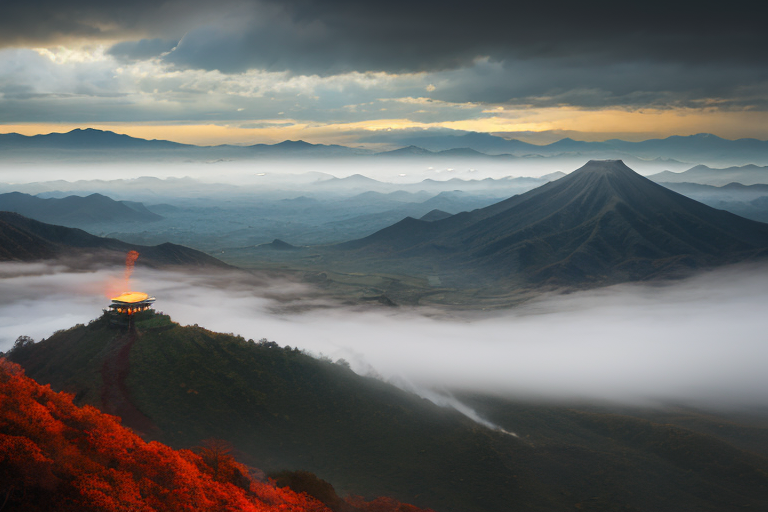
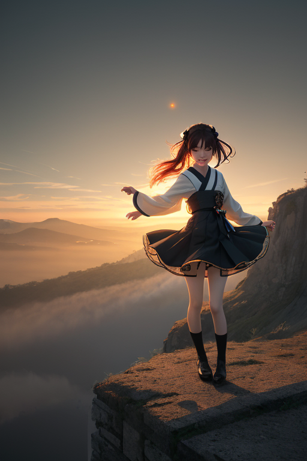
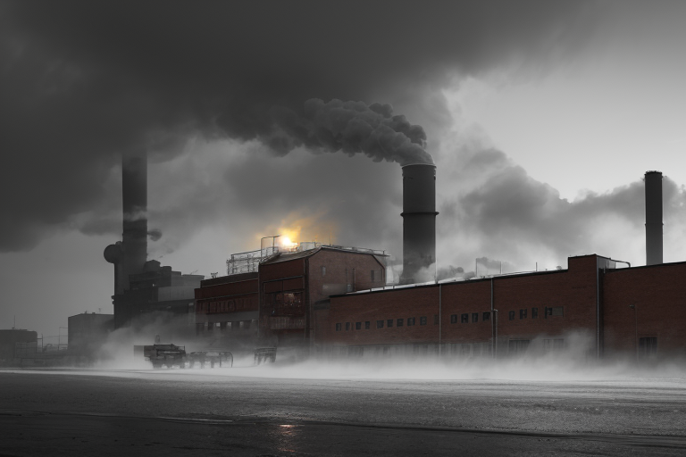
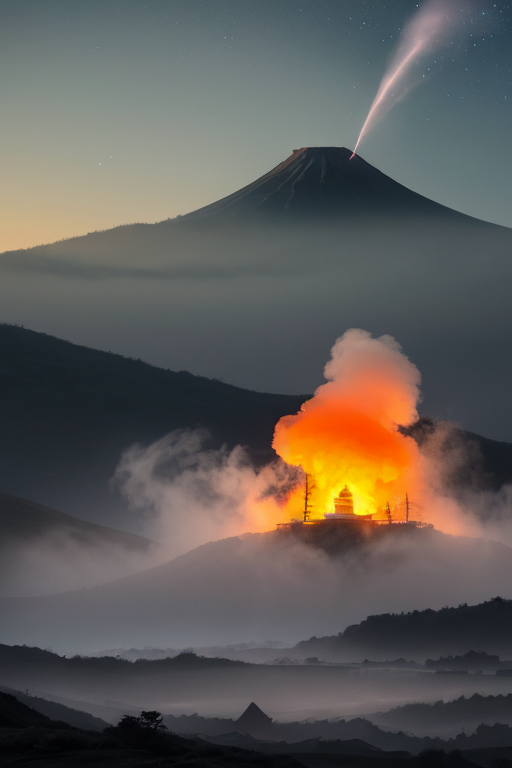
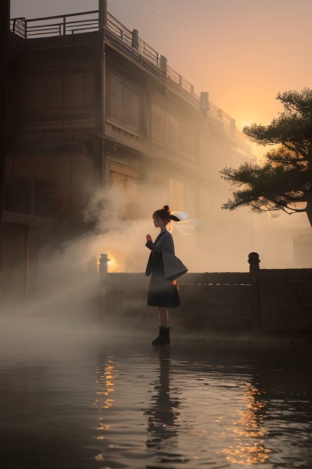

第一章 現実の群馬
あなたはまだ気づいていない。この土地にも、王がいることを。
榛名山の山肌を、からっ風が鋭く切り裂く。それは日本海と太平洋の気圧差が生み出す、この地に固有の風だ。山の稜線は、まさに空気の境界。その麓に広がる富岡製糸場の赤レンガは、かつて日本の近代化という、もう一つの「風」に吹かれた場所である。外から来た技術と、内から湧き上がる勤勉さが交差した転換点。今も静かに佇むその建物は、時代という風に翻弄され、また支えられた証しのように見える。
ここは境界の地だ。関東平野の北端、山々が立ちはだかる境目。外からの風はここで勢いを増し、内に籠もる湯煙は山肌の裂け目から逃げ出そうとする。人々はその風を「上州のからっ風」と呼び、時に苛烈さを嘆き、時にその吹き払うような潔さを気質としてきた。見えない圧力が絶えず行き交う、緊張のただ中。この地の歪みは、静かで、そして確かに存在する。

第二章 歪みの兆候
富岡製糸場の煉瓦壁を、冷たい風が打ちつける。明治という外からの風は、この地に近代化という大きな流れをもたらした。機械の唸り、新しい時間の感覚。それは確かに発展という名の風だった。しかし、風は必ず何かを運び、何かを剥ぎ取る。伝統的な生糸づくりの手触り、ゆったりとした山間の時間。それらは風に押され、少しずつ形を変え、時に歪みとなって蓄積されていった。
王は榛名山の中腹に立ち、その歪みを感じ取る。近代化の波は、土地の記憶を圧縮し、人々の心に目に見えないひずみを生んでいた。それは地震のような劇的なものではない。世代を超えて受け継がれる無言の負担、変化への適応の疲れ。風王は目を閉じ、妖精ヴェントラが操る気流に耳を澄ます。風は、ただ通り過ぎるだけではない。通り過ぎた後、何が残るのか。彼女は今、初めてその「後」の重さを、感情として認識し始めていた。

第三章 王の葛藤
富岡製糸場の赤レンガは、からっ風にさらされ、乾いた音を立てていた。グンマリアはその前に立ち、近代化という名の巨大な「風」を感じていた。それは人々の生活を一変させ、土地に新しいリズムを強いた。効率と速度の風。彼女の役割は、その風が破壊的な突風とならぬよう、気流を微調整することだ。しかし、調整するたび、彼女自身がその風に巻き込まれていく感覚があった。
ヴェントラが彼女の周りを軽やかに舞う。「王よ、あなたの動きが鈍い。何があなたを縛る？」妖精は問うた。グンマリアは答える。「この風は、私が生み出したものではない。人々が望み、生み出したものだ。それを調整する資格が、私にあるのか」
彼女は、製糸場で働いた女工たちの無念や、変化に翻弄される農民たちの戸惑いを、風のざわめきから聞き取っていた。彼女を動かす風は、もはや星からの使命だけではない。この地で感じた、人々の想いの重さという「風圧」だった。受け入れて自らも変わるか、拒んで使命に徹するか。湯煙のように、彼女の内側で答えが渦巻いていた。

第四章 妖精との対話
草津温泉の湯畑から立ち上る湯煙は、夜の闇に溶け、星のように見えた。ヴェントラは、その傍らに座る王の肩にそっと触れた。
「王よ、あなたを動かす風は何か？」
王は答えず、湯気の妖精オンセンナが、湯船の縁から声を上げた。「私たちは、出会いと別れを繰り返すこの地で生まれた。湯治客は来ては去り、女工たちも故郷を離れ、また帰っていった。そのすべての息づかいが、風となり、湯気となって、この土地の空気を満たしている」
ヴェントラが続けた。「星からの使命は風の向きでしかない。本当にあなたを動かすのは、その風に乗せられてあなたに届く、人々の『待っている』という想いだ。彼らは、何かがほんの少しだけ調整されることを、無意識に待ち続けている。それが、この土地の哀しみであり、希望なのだ」
王は、冷たいからっ風が湯煙をかき混ぜ、新しい形を作り出すのを見つめた。拒むことも、受け入れることも、もう風任せにはできない。彼女を動かす風は、彼女自身がこの地で感じ、選び取らねばならないものだった。

第五章 微調整と余韻
富岡製糸場の赤レンガに、夕陽が長い影を落とす。見学を終えた人々の群れが、駐車場へと流れていく。ヴェントラが囁いた。「次の観光バス、道が混んでるよ。あと五分遅れるように、風向き変えとく？」グンマリアは首を振った。「いい。五分早く着いても、誰も困らないから」
彼女が調整したのは、もっと些細なことだ。出口で立ち止まり、振り返る老夫婦の背中を、ほんのり温かい風が包んだ。製糸場の歴史に思いを馳せるその一瞬を、少しだけ長引かせるため。別れ際の学生たちの会話が、からっ風に乗って、ふと笑顔を誘う言葉を運ぶように。
彼女を動かす風は、もう外から吹いてくるものではない。この土地で出会った人々の、無意識の「待ち」が、彼女の中で澱のように沈殿し、自らの意思となって吹き出す内なる気流だ。それは、湯煙のように立ち上る哀愁であり、同時に、それを吹き払う清々しい風でもある。
草津温泉の湯畑から、新たな湯煙がゆらりと立ち上った。それは、今日という一日の、ごく小さな調整の余韻だった。
あなたの町にも、王がいる。